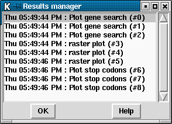

Many functions within spin produce "results" which are plotted to the SPIN Sequence Plot ( see section SPIN Sequence Plot) or the SPIN Sequence Comparison Plot ( see section SPIN Sequence Comparison Plot). The Result Manager provides a mechanism to interrogate and operate on these results.

The Result Manager can be accessed via the "Results manager" command in the View menu on either the main menu or the menu bar of the SPIN Sequence Plot. Alternatively the results can be accessed as a menu attached to the "Results" option on the SPIN Sequence Plot menu bar. In this case the individual results are written in the same colour as the plots they refer to:
Each result is listed in the window containing the time the result was
created, the name of the function which created the result and the
result number. The number is simply a unique identifier to help
distinguish between multiple results produced by the same function. The
results are listed in time order, the oldest at the top.
Each item in the list is consuming memory on your computer. Running
functions over and over again without removing the previous results will
slow down your machine and it will, eventually, run out of memory. Removing
items from the list solves this.
Pressing the right mouse button over an listed item will display a popup
menu of operations to perform on this result.
This option in the pop-up writes data about the parameters used to
obtain the corresponding result.
This option in the pop-up writes all the numerical values for the result
to the Output Window. This should be used sparingly as it requires a lot
of memory.
This option allows the line width and colour of the matches to be altered
(see section Colour Selector).
A colour browser is displayed from which the desired line width or colour can
be configured. Pressing OK will update the SPIN Sequence Plot.
This option removes the points from the SPIN Sequence Plot but retains the information
in memory.
This option will redisplay previously hidden points in the SPIN Sequence Plot.
This command removes all the information regarding this particular
result and access to this data is lost.
![[picture]](spin_results_manager_d2,6in.png.html)
(Click for full size image)
Information
List
Configure
Hide
Reveal
Remove
Last generated on 25 April 2016.